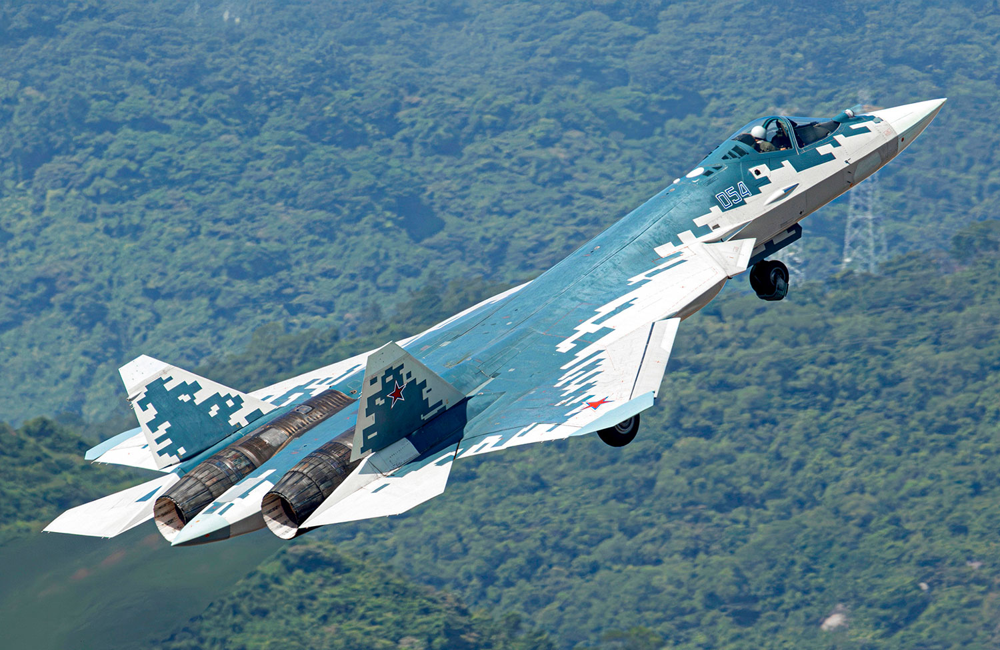

Su-57
A Sukhoi Su‑57 (oroszul: Сухой Су‑57), NATO-jelölése „Felon”, Oroszország legmodernebb többfeladatú vadászgépe, amelyet lopakodó képességgel, szuperszonikus utazósebességgel, fejlett érzékelőkkel és változatos fegyverzet-támogatással terveztek
A Su‑57 továbbfejlesztett verziói és exportváltozatai (pl. Su‑57E) lehetővé tehetik, hogy Oroszország nemzetközi piacokon is megjelenjen vele. Reuters Emellett a technológiai fejlesztések (mesterséges intelligencia-integráció, modern hajtóművek) révén tervezik, hogy versenyképes alternatívává váljon a nyugati típusokkal szemben.
